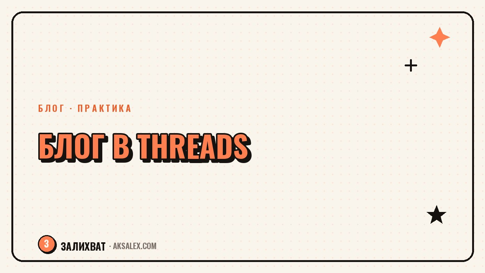

Как вести блог в Threads: с чего начать новичку

Threads - текстовая соцсеть от Meta, которая растёт быстрее многих площадок, потому что встроена прямо в Instagram и забирает часть его аудитории почти без усилий. Если ты уже ведёшь блог где-то ещё, завести Threads стоит немного времени, зато даёт доступ к формату, где ценится не красивая картинка, а то, что ты реально думаешь и готов сказать прямо. Разберём, как настроить профиль правильно с первого дня, какой формат постов работает и как не распыляться, если у тебя уже есть блог в других соцсетях.
Как устроен Threads и чем он отличается от Instagram
Threads - это текстовая лента, похожая на твиттер-формат: короткие посты до 500 символов, можно с картинкой или видео, но акцент именно на тексте и реакции в комментариях. В отличие от Instagram, где решает визуал, здесь решает мысль, высказанная коротко и по делу. Пост без единой фотографии может набрать больше внимания, чем с идеально обработанным кадром, если в нём есть конкретная мысль или вопрос, который цепляет.
Привязка к Instagram - и плюс, и минус. Плюс в том, что аккаунт создаётся за минуту на основе существующего профиля, и часть подписчиков из Instagram автоматически видит, что ты появился на новой площадке. Минус - ты не можешь вести Threads отдельно от Instagram-аккаунта: удаление одного может повлиять на другой, и это нужно учитывать при планировании.
Кому Threads подходит особенно хорошо
Площадка особенно хорошо работает для блогеров, которые готовы делиться мнением, разбирать темы из своей ниши текстом и вести диалог в комментариях. Если твой формат - визуальный контент без текста (например, чистая фотография или дизайн), Threads потребует дополнительных усилий на формулировку мыслей словами, а не просто перегонку визуала с других площадок.
Настройка профиля с первого дня
Профиль в Threads наследует имя, фото и часть описания из Instagram, но биографию и ссылку стоит проверить и адаптировать отдельно. Опиши в двух строках, о чём ты пишешь и зачем читателю подписываться именно здесь, а не в другой твоей соцсети - люди часто ведут несколько площадок одинаково, и аудитория не понимает, зачем следить за обеими.
- Проверь, что имя пользователя совпадает с другими площадками для узнаваемости
- Напиши биографию, которая объясняет ценность именно текстового формата у тебя
- Закрепи первый пост-знакомство с объяснением, кто ты и о чём блог
- Укажи ссылку на основную площадку или сайт, если она есть
- Проверь настройки приватности - по умолчанию профиль может быть публичным или привязанным к настройкам Instagram
Какой формат постов работает в Threads
Лучше всего в Threads работают посты с чёткой позицией или наблюдением, поданным без длинных вступлений. Формат 'короткая мысль плюс вопрос аудитории' вовлекает активнее, чем развёрнутый текст на пять абзацев - площадка заточена под быстрое чтение в ленте, а не под лонгриды.
Хорошо работают серии постов - когда ты продолжаешь мысль в ответах на свой же пост, формируя что-то вроде мини-треда. Это удерживает внимание и увеличивает время, которое человек проводит с твоим контентом, а значит повышает шанс, что алгоритм покажет пост большему числу людей.
В Threads выигрывает не тот, кто пишет красивее, а тот, кто формулирует мысль короче и конкретнее. Если можешь сократить пост на треть без потери смысла - сократи.
Нейросети в подготовке текстов для Threads
Если у тебя уже есть длинный пост для другой площадки, нейросеть удобно использует для перепаковки: попроси выделить из него главную мысль и сократить до формата коротких постов-наблюдений. Также можно попросить нейросеть предложить несколько вариантов провокационного, но честного вопроса к аудитории под твою тему - такие посты часто набирают больше комментариев, чем утверждения.
Частота публикаций и перенос аудитории
Threads поощряет частую активность больше, чем Instagram - короткие посты не требуют продакшена, поэтому реалистично публиковать несколько раз в день, если есть что сказать. Но гнаться за количеством ради количества не стоит: пустой пост без мысли размывает профиль и не добавляет вовлечённости.
Переносить аудиторию стоит аккуратно: сделай пост в Instagram и других своих соцсетях с анонсом, что теперь ты есть в Threads, и объясни, почему там будет интересно следить отдельно - например, там ты делишься мыслями, которые не влезают в формат Reels или карусели. Прямой призыв 'подпишись везде' без объяснения зачем работает хуже, чем конкретная причина.
| Площадка | Формат контента | Чем Threads отличается |
|---|---|---|
| Фото, Reels, карусели | Визуал первичен, текст вторичен | |
| Threads | Короткие текстовые посты | Текст и мнение первичны, визуал опционален |
| Telegram | Длинные посты, личный тон | Threads короче и более публичный, с открытой лентой |
| X (Twitter) | Короткие посты, быстрые реакции | Похожий формат, но меньше политики и новостей в ленте |
Частые ошибки новичков в Threads
Первая ошибка - копировать посты из Instagram слово в слово без адаптации под формат. Длинный текст из карусели, вставленный целиком, теряется в текстовой ленте и читается хуже, чем короткая версия с той же мыслью. Вторая ошибка - молчать в комментариях под своими постами: в Threads активное участие в обсуждении под собственным постом увеличивает его видимость, и игнорировать комментарии - значит терять часть охвата бесплатно.
Третья частая ошибка - пытаться быть идеальным с первого дня. Threads прощает пробные, не идеально отполированные посты лучше, чем Instagram: аудитория здесь ценит живость и скорость реакции на происходящее больше, чем безупречную подачу. Лучше опубликовать честную мысль сегодня, чем идеальный пост через неделю, когда тема уже неактуальна.
Частые вопросы
Можно ли вести Threads без аккаунта в Instagram?
Нет, аккаунт в Threads создаётся на основе существующего профиля Instagram, отдельно завести его нельзя. Это нужно учитывать: действия с одним аккаунтом, включая удаление, затрагивают и другой.
Какой формат постов лучше всего работает в Threads для новичка?
Короткие посты с чёткой мыслью или наблюдением, поданные без долгих вступлений, работают лучше длинных текстов. Хорошо вовлекают серии постов-продолжений и честные вопросы к аудитории под темой блога.
Сколько раз в день стоит публиковать посты в Threads?
Площадка поощряет частую активность, и несколько постов в день - нормальная практика, если есть реальные мысли для публикации. Но публиковать пустые посты ради количества не стоит - это размывает профиль без пользы для вовлечённости.
Как перенести подписчиков из Instagram в Threads?
Сделай анонс в других соцсетях с объяснением, почему стоит подписаться отдельно - например, там ты делишься мыслями, которые не подходят формату Reels. Прямой призыв без объяснения причины работает заметно слабее конкретного обоснования.
Помогают ли нейросети вести блог в Threads?
Да, нейросеть удобно использовать для перепаковки длинных постов из других площадок в короткий формат и для генерации вариантов вопросов к аудитории. Саму живость и регулярность публикаций она не заменяет, это остаётся задачей автора.
Раз тема оказалась полезной, вот что почитать следующим. Почему страх перемен не проходит сам и что делать, чтобы решиться на новое, не дожидаясь полной уверенности.
Читать статью →а не вручную